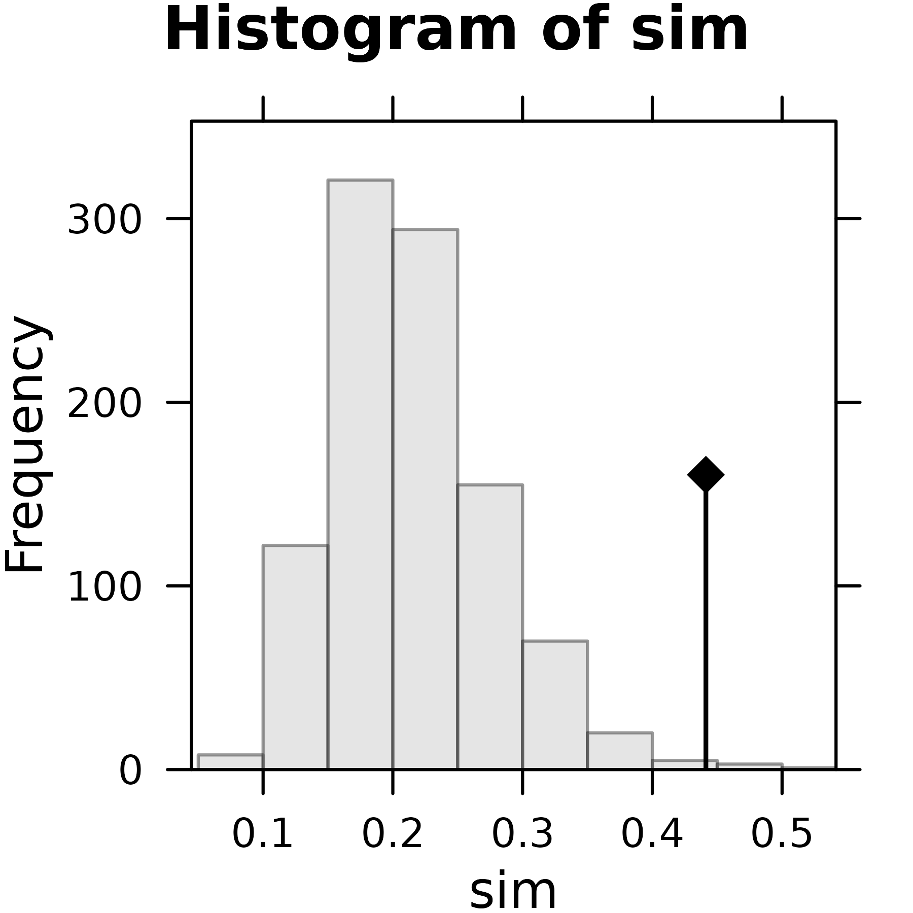
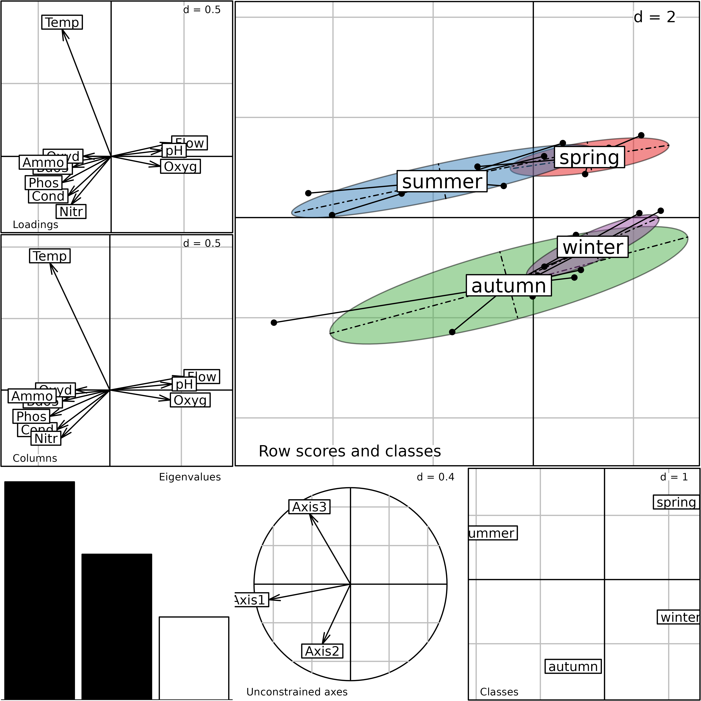
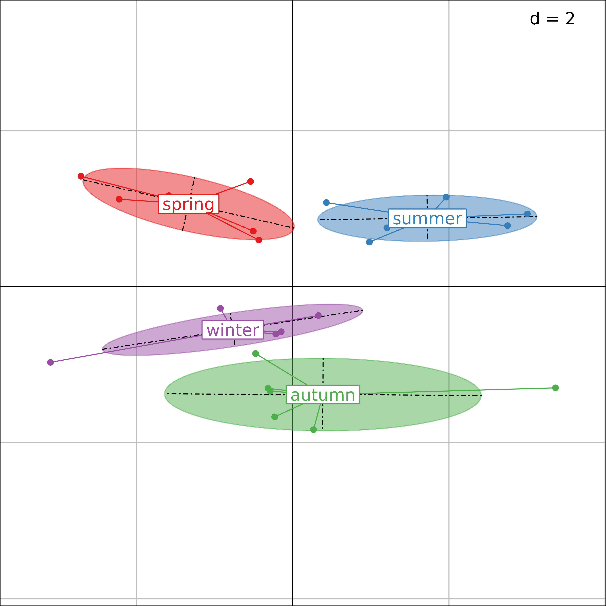

Abstract
This vignette shows how the partitioning of sites can be taken into account during the analysis of an ecological data table. We present the Between-Class and Within-Class Analyses and Discriminant Analysis. Then we present several examples of use of these methods on a small data set with simple structures. The vignette ends with a comparison between Discriminant Analysis and Between-Class Analysis.
Introduction
Taking into account the existence of groups of sites (or
samples) is achieved by decomposing a data table into two
additive components. The first relates to the differences between groups
and its analysis aims to describe the main characteristics of the
groups. The second component contains only within-groups variations and
its analysis focuses on the characteristics of the residuals (i.e., the
data variability if groups did not exist).
Groups are to be taken here in a very broad sense. They can, for example, represent space-time structures, like sites belonging to the same geographic region, or to the same period of time. They can also correspond to an experimental design, with groups representing different treatments. One of the advantages of the duality diagram framework used in the ade4 package is that all the simple methods that have been described in the vignette Description of environmental variables structures and Description of species structures can be used here, which means that the effect of groups can be analysed in any type of data table (quantitative, qualitative or mixed tables, counts, presence/absence, row percentages, etc.).
Two types of analyses, called Between-Class and Within-Class Analysis
are implemented in ade4. The corresponding generic
functions are named bca (formerly between) and
wca (formerly within) and several methods are
provided:
library(ade4)
library(adegraphics)
methods(bca)#> [1] bca.coinertia* bca.dpcoa* bca.dudi* bca.rlq*
#> see '?methods' for accessing help and source code
methods(wca)#> [1] wca.coinertia* wca.dpcoa* wca.dudi* wca.rlq*
#> see '?methods' for accessing help and source codeBetween-Class Analysis models the differences between groups by computing the group means, and the resulting means table is then analysed. Conversely, Within-Class Analysis removes the group effect by computing the residuals between observed data and group means, and analyses the table of these differences.
The first analysis can be used to visually check the existence of groups, to describe the main characteristics of the differences between the groups (for example, which variables are best related to which groups?), and to test their statistical significance using a permutation test. The second one tries to find out wether other structures remain in the data table that can be revealed after removing a strong group effect.
An environmental situation
We have already used the meaudret data set in other
vignettes. In this vignette, we use the meau data set which
has been used to illustrate the first description of Between-Class and
Within-Class Analyses (Doledec, 1987).
Both data sets contain the same kind of data, physico-chemical
parameters measured four times (four seasons) at several sites along a
small stream called the Méaudret (South-East of France). But in the
meaudret data set, the oxygen variable has
been removed because it takes the same values in all the sampling sites
during winter. This can cause an error in some situations (particularly
in multiway analyses). The meaudret$env data frame
therefore contains only nine variables, while the meau$env
data frame contains 10 variables. The second difference is the fact that
the meaudret data set gives the results of five sampling
sites, while the meau data set includes a sixth site. This
site is located on another stream, the Bourne river, into which the
Méaudret flows. It can be used as a control site, as it is situated
upstream the Méaudret and Bourne confluence.
The meau$env data frame therefore has 24 rows and 10
columns:
#> [1] 24 10The 10 columns correspond to 10 environmental variables: water temperature, flow, pH, conductivity, oxygen, biological oxygen demand (BDO5), oxydability, ammonium, nitrates, and phosphorus.
names(env)#> [1] "Temp" "Flow" "pH" "Cond" "Oxyg" "Bdo5" "Oxyd" "Ammo"
#> [9] "Nitr" "Phos"The 24 rows correspond to the six sites, sampled four times
(sp = spring, su = summer, au =
autumn, and wi = winter):
row.names(env)#> [1] "sp_1" "sp_2" "sp_3" "sp_4" "sp_5" "sp_6" "su_1" "su_2"
#> [9] "su_3" "su_4" "su_5" "su_6" "au_1" "au_2" "au_3" "au_4"
#> [17] "au_5" "au_6" "wi_1" "wi_2" "wi_3" "wi_4" "wi_5" "wi_6"The meau data set also contains the description of the
sampling design coded as two categorical variables
(factor):
(seasons <- meau$design$season)#> [1] spring spring spring spring spring spring summer summer
#> [9] summer summer summer summer autumn autumn autumn autumn
#> [17] autumn autumn winter winter winter winter winter winter
#> Levels: spring summer autumn winter
(sites <- meau$design$site)#> [1] S1 S2 S3 S4 S5 S6 S1 S2 S3 S4 S5 S6 S1 S2 S3 S4 S5 S6
#> [19] S1 S2 S3 S4 S5 S6
#> Levels: S1 S2 S3 S4 S5 S6The aim of the study is to analyse the variations of physico-chemical parameters along the stream and during the year (spatial and temporal components). We first apply a normed PCA on the environmental data table.
(envpca <- dudi.pca(env, scannf = FALSE, nf = 3))#> Duality diagramm
#> class: pca dudi
#> $call: dudi.pca(df = env, scannf = FALSE, nf = 3)
#>
#> $nf: 3 axis-components saved
#> $rank: 10
#> eigen values: 5.745 1.43 1.084 0.6761 0.5244 ...
#> vector length mode content
#> 1 $cw 10 numeric column weights
#> 2 $lw 24 numeric row weights
#> 3 $eig 10 numeric eigen values
#>
#> data.frame nrow ncol content
#> 1 $tab 24 10 modified array
#> 2 $li 24 3 row coordinates
#> 3 $l1 24 3 row normed scores
#> 4 $co 10 3 column coordinates
#> 5 $c1 10 3 column normed scores
#> other elements: cent normThe following figure shows the PCA of the Méaudret environmental data table. The correlation circle shows that the first axis corresponds to a pollution gradient, with high levels of pollution toward the right and absence of pollution on the left. The second axis is a temperature and flow gradient and underlines the particular behaviour of nitrates (compared to other pollution parameters). The analysis of the sites factor map is not easy, as many labels are superimposed, and spatial and temporal structures are mixed.
g1 <- s.corcircle(envpca$co, plot = FALSE)
g2 <- s.label(envpca$li, plot = FALSE)
ADEgS(list(g1, g2))Correlation matrix PCA of the Méaudret environmental data table. Left: correlation circle, right: sites factor map.
Interpretation is easier on the next figure, where the four seasons are grouped using a star and an ellipse for each site. It is easy to see that site 2 is more polluted than the others (because it is located on the right of the figure). Sites 3, 4 and 5 are less and less polluted, and site 5 is in fact comparable to site 1. Site 6 (control site located on the Bourne river) is on the left of site 1, denoting even lower levels of chemical pollution.
PCA sites factor map, with the four samples grouped for each site.
The next figure shows the same factor map, with the six sampling sites grouped for each season, but the temporal structure is less easy to interpret than the succession of the six sites along the stream.
PCA sites factor map, with the six sampling sites grouped for each season.
Here, we show that applying a simple PCA and then using graphical functions allows to display differences among sites or seasons. However, this approach is not optimal. Indeed, the spatial structures can be analysed by computing the mean of the four dates for all the parameters (between-sites analysis), and conversely the temporal structures can be assessed by computing the mean of the six sites (between-dates analysis). It is also possible to try to remove the spatial effect using a within-site analysis and see if temporal structures appear more clearly.
Between-Class Analysis: analysing differences between groups
Between-Class Analyses (Doledec 1987, Culhane 2002} are methods to separate groups of sites, given a set of variables. There are several types of Between-Class Analyses, corresponding to the initial analysis after which Between-Class Analysis is computed (e.g., Principal Component Analysis, Correspondence Analysis, or Multiple Correspondence Analysis).
BCA is the analysis of a table of group means. The main function to
compute a Between-Class Analysis in the ade4 package is
the bca function. All the outputs of this function are
grouped in a dudi object (subclass
between).
The bca function takes two main arguments: an analysis
of the initial table (a dudi object) and a categorical
variable (an object of class factor). In
ade4, the user must first perform a simple analysis to
identify the main variations in the data table and then use the
bca function to introduce the partitioning in groups. This
two-step implementation has a pedagogical aim by forcing users to
interpret simple structures before analysing differences among groups.
The outputs of both analyses can then be compared to evaluate the role
of the categorical variable. The last two arguments (scannf
and nf) have the same meaning as in the other analysis
functions.
Between-Class Analysis is a particular case of analysis on
instrumental variables when only one explanatory categorical variable is
considered. The main advantage to use bca function is that
several methods (plot, summary) are optimised
to summarize the results of the analysis.
Between-site analysis
As explained at the begining of this chapter, a Between-Class
Analysis is the analysis of the table of class means. So the
between-site analysis is the analysis of the table of site means. The
between-site analysis betsite is computed using the
bca function, and the table of site means is stored in the
betsite$tab data frame. We can check that the dimensions of
the betsite$tab data frame are six rows (six sites) and 10
columns (10 physico-chemical parameters), and that the mean of the
standardised temperature in site 1 during the four seasons is equal to
-0.1834:
#> [1] 6 10
betsite$tab[1:3, 1:5]#> Temp Flow pH Cond
#> S1 -0.183449013 -0.9965745 0.1162958 -0.2449490
#> S2 -0.039880220 -0.4293031 -0.8805250 1.1022704
#> S3 0.007976044 -0.1724604 -0.3821146 0.5817538
#> Oxyg
#> S1 0.39460259
#> S2 -1.56390293
#> S3 -0.06673426
mean(envpca$tab$Temp[sites == "S1"])#> [1] -0.183449
betsite#> Between analysis
#> call: bca.dudi(x = envpca, fac = sites, scannf = FALSE)
#> class: between dudi
#>
#> $nf (axis saved) : 2
#> $rank: 5
#> $ratio: 0.4412974
#>
#> eigen values: 3.335 0.6156 0.4027 0.04589 0.01407
#>
#> vector length mode content
#> 1 $eig 5 numeric eigen values
#> 2 $lw 6 numeric group weigths
#> 3 $cw 10 numeric col weigths
#>
#> data.frame nrow ncol content
#> 1 $tab 6 10 array class-variables
#> 2 $li 6 2 class coordinates
#> 3 $l1 6 2 class normed scores
#> 4 $co 10 2 column coordinates
#> 5 $c1 10 2 column normed scores
#> 6 $ls 24 2 row coordinates
#> 7 $as 3 2 inertia axis onto between axisThe plot function can be used to display the main
components of the betsite analysis. It provides a composite
plot made of six elementary graphs. The main one (top-right, labeled
Row scores and classes) shows the row scores of the initial
data table ($ls data frame). The four sampling seasons for
each site are grouped with a star and an ellipse. Each star and ellipse
is labeled with the site name (S1 to S6),
located at the gravity center of the star (center of the ellipse).
Plot of the betsite analysis. This is a composite plot
made of six graphs (see text for an explanation of the six graphs).
The bottom-right graph (Classes) shows the scores for
the groups of the Between-Class Analysis ($li data frame).
It contains only six points, corresponding to the six sites.
The following graph on the left (Unconstrained axes)
shows the projection of the first three axes of the initial analysis
(envpca) onto the Between-Class Analysis. It contains only
3 arrows, as this is the number of axes kept in the envpca
analysis. This graph provides a convenient way to understand the
relationships between the initial PCA that focuses on total variation
and the Between-Class Analysis. Here, we can see that the first two axes
of the simple PCA are nearly equivalent (apart from the sign) to the
first two axes of the between-site analysis.
The lower-left graph is labeled Eigenvalues; this is the
usual eigenvalues barchart. The last two graphs on the left are labeled
Loadings and Columns. They both show the ten
physico-chemical parameters, and they should be comparable. Large
differences between these two graphs would imply that the analysis is
not coherent. The first one (Loadings) gives the
coefficients of the linear combination that maximise the between-class
inertia ($c1 data frame). The second one
(Columns) shows the scores of the variables
($co data frame).
We can see that the first axis of the Between-Class Analysis is very
similar to the first axis of the simple PCA (pollution gradient)
indicating that the main structures (identified by PCA) are also the
main differences among groups. The factor map of row scores in the
simple PCA is very similar to the factor map of the Between-Class
Analysis, Row scores and classes graph). And the
correlation circle of parameters in the simple PCA is very similar to
the Columns graph in the between-site analysis. This is
because the between-site structure is very strong in this data set, and
the first axis of the simple PCA already identified it.
The randtest function can be used to check the
statistical significance of the differences between sites. The criterion
used in this test is the ratio of the between-class inertia to the total
inertia. The simulated p-value and the observed criterion can
be obtained by displaying the rtbetsite object. By default,
999 permutations are performed.
(rtbetsite <- randtest(betsite))#> Monte-Carlo test
#> Call: randtest.between(xtest = betsite)
#>
#> Observation: 0.4412974
#>
#> Based on 999 replicates
#> Simulated p-value: 0.003
#> Alternative hypothesis: greater
#>
#> Std.Obs Expectation Variance
#> 3.597730158 0.216663228 0.003898472The observed value of the criterion is equal to 0.4413, which means that 44% of the total inertia comes from the differences between sites. The simulated p-value is equal to 0.003, which means that the difference between sites is highly significant.
The following histogram shows the distribution of the values of the criterion computed on permuted tables. The observed value for the unpermuted table (0.4413) is plotted on the graph with a vertical bar and a black diamond sign.
plot(rtbetsite)
Plot of the rtbetsite Monte-Carlo test.
The main characteristic of the spatial structure of physico-chemical parameters revealed by these analyses is the pollution gradient. Site 1 is not polluted, it is located opposite of the pollution parameters (phosphates, ammonium, oxydability, biological oxygen demand) on the factor maps. Site 2 is the most polluted, while sites 3, 4 and 5 are less and less polluted, as the restoration process takes place downstream along the stream. Site 6 is a control on the Bourne river, and it is not polluted. This particular structure is explained by the fact that the Autrans holiday resort is located between sites 1 and 2. The high tourist activity at this place leads to an overflow of water treatment capacity.
Between-season analysis
The between-season analysis gives a more interesting insight into the
meau data set. Indeed, the simple PCA did not provide a
very convincing picture of the seasonal structure of physico-chemical
parameters. The between-season analysis is computed using the
bca function, and we can check the dimension of the
betseason$tab data frame:
#> [1] 4 10
The generic plot function can be used as in the previous
section to display the main components of the betseason
analysis. The seasonal structure of the physico-chemical parameters is
much clearer on this figure: we see that the temperature plays a key
role in the opposition between warm (spring, summer) and cold (autumn,
winter) seasons on the second axis. The first axis is still a pollution
gradient (high levels of pollution toward the left), and opposes summer
to spring in warm seasons and autumn to winter for cold seasons. This is
easy to understand, as Autrans is a well-known summer resort, with high
tourist activity during summer holidays.
In the between-season analysis, the values of each parameter are averaged across the six sites. This removes the spatial component of the data set, and makes the seasonal structure much more apparent. Another way to achieve the same result (underline the seasonal effect) is to explicitly remove the spatial component using a within-site analysis.
Within-Class Analysis: removing differences between groups of sites
Within-Class Analysis (Doledec 1987) is the analysis of the residuals between observed data and group means. This means that the differences between groups have been removed from the data set, and we are looking for other structures remaining in the table.
Like in Between-Class Analysis, there is no constraint on the number of sites compared to the number of variables, and no problem with numerous and/or correlated variables.
In the ade4 package, the wca function
is used to compute Within-Class Analysis. All the outputs of this
function are grouped in a dudi object (subclass
within).
The arguments of the wca function are the same as those
of the bca function: the dudi object, the
factor describing the groups, and the scannf and
nf usual arguments. A generic plot function is
also available in adegraphics to summarise the outputs
of a wca analysis.
The within-site analysis on the Méaudret data set is computed using
the wca function. This function calculates the residuals
between the environmental data table and the site means, and performs
the analysis on these residuals:
witsite <- wca(envpca, sites, scannf = FALSE)
g1 <- s.corcircle(witsite$co, plot = FALSE)
g2 <- s.class(witsite$li, sites, col = TRUE, plot = FALSE)
ADEgS(list(g1, g2))Plot of the witsite analysis. Left: correlation circle
of parameter scores, right: row coordinates (grouped by sites).
s.class(witsite$li, seasons, col = TRUE)
Plot of the witsite analysis (grouped by seasons).
It is easy to check that the site effect has been removed, by plotting the row scores of the within-site analysis. This figureshows that these row scores are centred by site (all six labels are superimposed at the center of the graph).
Seasonal variations can be exposed by drawing the same row scores
(witsite$li), but grouped by season.
The same effect as in the between-season analysis is visible here, with a seasonal effect on the second axis (spring and summer vs. autumn and winter) and a pollution gradient on the first axis (summer vs. spring and autumn vs. winter).
Note that the information contained in the original PCA
(envpca) is fully decomposed by the Between- and
Within-Class Analyses:
sum(envpca$eig)#> [1] 10#> [1] 10And the ratios provided by the analysis are simply obtained by:
#> [1] 0.4412974#> [1] 0.5587026
betsite$ratio#> [1] 0.4412974
witsite$ratio#> [1] 0.5587026
betsite$ratio + witsite$ratio#> [1] 1Discriminant Analysis
The aim of Discriminant Analysis and Between-Class Analysis is the same: highlighting the differences between groups. However, the constraints associated to these analyses differ so that both methods do not maximise the same criteria. Whereas Between-Class Analysis maximises the between-class inertia, Discriminant Analysis maximises the between-class inertia relative to the total inertia.
The discrimin function of the ade4
package is used to compute a Discriminant Analysis. All the outputs of
this function are grouped in a discrimin object. The
arguments of the discrimin function are the same as those
of the bca function: the first argument is the
dudi object corresponding to the preparatory analysis of
the data table. The second argument is a factor describing the groups of
rows. The last two arguments (scannf and nf)
have the same meaning as in the other analysis functions.
Discriminant Analysis is applied to study the seasonal structure of physico-chemical parameters:
discseason <- discrimin(envpca, seasons, scannf = FALSE)
The plot function can be used to display the main
components of the discseason analysis. It provides a
composite plot made of six elementary graphs. The main one (top-right,
labeled Row scores and classes) shows the projections of
the sites onto the plane defined by the axes of the Discriminant
Analysis ($li data frame). The six sampling sites for each
season are grouped with a star and an ellipse. Each star and ellipse is
labeled with the season name, located at the gravity center of the star
(center of the ellipse). The bottom-right graph
(Class scores) shows the group scores ($gc
data frame). It contains only four points, corresponding to the four
seasons. The following graph on the left
(Unconstrained axes) shows the projection of the axes of
the initial Principal Component Analysis ($cp data frame)
to understand the relationships between the initial PCA and the
Discriminant Analysis. Here, we can see that the third axis of the
simple PCA - temperature - is equivalent (apart from the sign) to the
first axis of the Discriminant Analysis. The lower-left graph
(Eigenvalues) is the usual eigenvalues barchart. The last
two graphs on the left are labeled Loadings and
Columns. The first one represents the coefficients of the
variables ($fa data frame). The second one represents the
covariances between the ten physico-chemical parameters
($va data frame) and the axes of the analysis.
The first axis of the Discriminant Analysis is linked to the water temperature and the second axis to the flow. The seasons define a strong structure where the pollution component disappeared.
The randtest function can be used to check the
statistical significance of the differences between seasons. The
criterion used in this test is the ratio of the between-class inertia to
the total inertia. The simulated p-value and the observed
criterion can be obtained by displaying the rtdiscseason
object. By default, 999 permutations are performed.
(rtdiscseason <- randtest(discseason))#> Monte-Carlo test
#> Call: randtest.discrimin(xtest = discseason)
#>
#> Observation: 0.2551751
#>
#> Based on 999 replicates
#> Simulated p-value: 0.001
#> Alternative hypothesis: greater
#>
#> Std.Obs Expectation Variance
#> 5.6640561216 0.1302597718 0.0004863804The observed value of the criterion is equal to 0.2552, which means that 26% of the total inertia comes from the differences between seasons. The simulated p-value is equal to 0.001, which means that the difference between seasons is highly significant.
The histogram shows the distribution of the values of the criterion computed on permuted tables. The observed value for the unpermuted table (0.2552) is plotted on the graph with a vertical bar and a black diamond sign.
plot(rtdiscseason)Plot of the rtdiscseason Monte-Carlo test.
The main characteristic of the temporal structure of physico-chemical parameters revealed by this analysis is the water cycle, the pollution gradient is eliminated.
Between-Class Analyses and Discriminant Analyses highlight
differences between groups of observations but are not based on the same
constraints. This implies that Between-Class Analysis maximises the
between-class inertia whereas Discriminant Analysis maximises the
between-class inertia relative to the total inertia. This theoretical
difference has important practical implications. Between-Class Analyses
can work on tables with few individuals compared to the number of
variables and is able to deal with collinearities among variables. On
the other hand, Discriminant Analysis requires a high number of
individuals compared to the number of variables. An another important
difference is illustrated by the Row scores and classes
graph of the between-season analysis. On this plot, all the seasons
present an elongated ellipse associated to the pollution gradient kept
on the first axis of the analysis. Hence, BCA maximises the distance
between the centers of the ellipses (i.e., the between-class inertia)
but does not control for the size of the ellipses (i.e., the total
inertia). On the other hand, Discriminant Analysis, tries to maximise
the between-class inertia while minimising the total inertia. In the
Row scores and classes graph of the Discriminant Analysis,
the ellipses of seasons are thus much smaller. All the sites gathered to
the gravity center of the seasons, highlighting the seasonal cycle.
Conclusion
The main structure of the meau data set is the spatial
structure of the pollution along the six sites. There is a strong
pollution peak between sites 1 and 2, and the restoration process takes
place downstream along sites 3, 4 and 5. The simple PCA of the data
table shows this spatial structure very clearly and it can be
interpreted using the contributions of the 10 physico-chemical
parameters. The between-site analysis does not bring much more
information.
There is also a strong seasonal structure, which is not very clearly taken into account by the simple PCA. This structure opposes warm and cold seasons. In the warm season, pollution is lower in spring than in summer because stream flow is higher in spring and pollutants are more diluted. Moreover, tourism is much higher in summer, which still increases pollution. In the cold season, pollution is higher in autumn because stream flow is at its minimum, so the concentration of pollutants is maximum, although most tourists have gone. This structure is adequately revealed by both the between-season analysis and the within-site analysis. However, this pollution structure disappeared in the Discriminant Analysis because of the supplementary constraint on the physico-chemical variables keeping only the water cycle (temperature and flow).
These analyses work differently. The between-season and discriminant analyses compute the mean of each parameter among the six sites, so that the spatial effect is removed and the seasonal effect is revealed. The within-site analysis computes the residuals between the raw data table and the spatial model (means by site), thus removing the spatial effect and revealing the seasonal effect.